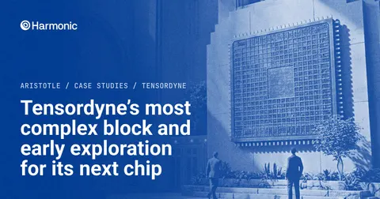

Harmonic's Aristotle proved 185 properties of Tensordyne's most complex block
Aristotle, an AI that formally verifies software and hardware, also refuted 56 properties of the 12.2 million gate-equivalent block, each with a reproducible counterexample, exposing bugs up to 110,000 cycles after reset. Counting earlier Aristotle runs on sub-blocks, Tensordyne found 8 bugs early in its next chip's design cycle.

Checked against: harmonic.fun